Définition
Une translation de vecteur V est une transformation
ponctuelle qui, à un point M fait correspondre un point M′ tel que :
MM′=V
Propriétés
Soient 2 points A et B et leurs transformés A′ et B′ par la
translation de vecteur V.
On a par hypothèse :
AA′=V et BB′=V.
On en déduit que AB=A′B′.
La transformée d’une droite est une droite de même direction.
Le transformé d’un cercle est un cercle de même rayon.
La translation conserve les angles.
Avec Xcas
translation(B-A,M) (resp translation(a+i*b,M)) désigne le
translaté de M dans la translation de vecteur AB (resp
d’affixe a+ib).
Une visualisation
On considère la translation de vecteur 2+i.
On veut visualiser l’image par cette translation des 4 carrés :
C1:=carre(i,1+i,affichage=1+rempli); C2:=carre(1,2,affichage=2+rempli); C3:=carre(i+1,2+i,affichage=3+rempli); C4:=carre(0,1,affichage=4+rempli)
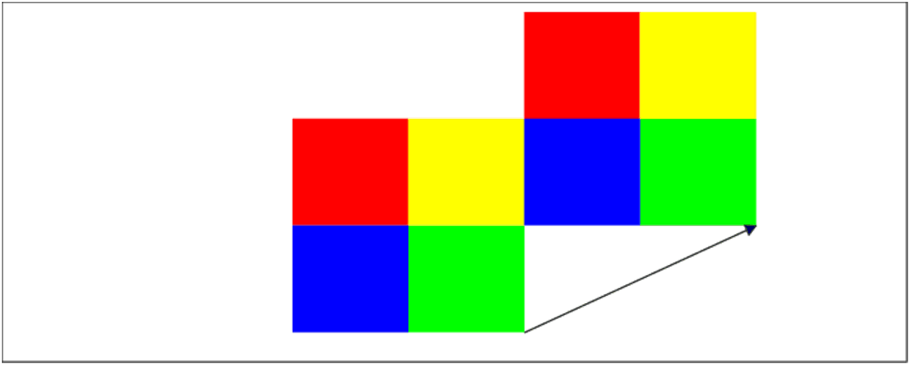
On tape :
C1:=carre(i,1+i,affichage=1+rempli); translation(2+i,C1,affichage=1+rempli); C2:=carre(1,2,affichage=2+rempli); translation(2+i,C2,affichage=2+rempli); C3:=carre(i+1,2+i,affichage=3+rempli); translation(2+i,C3,affichage=3+rempli); C4:=carre(0,1,affichage=4+rempli); translation(2+i,C4,affichage=4+rempli); translation(1+i,carre(0,1),affichage=4+rempli)
On obtient :
Définition
Une rotation de centre O et d’angle t est une transformation
ponctuelle qui, à un point M fait correspondre un point M′ tel que :
OM=OM′ et (OM,OM′=t+2nπ (n∈
Z)
Propriétés
Soient 2 points A et B et leurs transformés A′ et B′ par la
rotation de centre O et d’angle t. On a :
AB=A′B′ et (AB,A′B′=t+2nπ
La transformée d’une droite est une droite.
Le transformé d’un cercle est un cercle de même rayon.
La rotation conserve les angles.
Avec Xcas
rotation(O,t,M) désigne le transformé de M dans la rotation de
de centre, le point O, et d’angle t.
rotation(a+i*b,t,M) désigne le transformé de M dans la rotation
de centre, le point d’affixe a+ib, et d’angle t.
Une visualisation
On considère la rotation de centre C=(−2,0) et d’angle π/3.
On veut visualiser l’image par cette rotation des 4 carrés :
C1, C2, C3, C4.
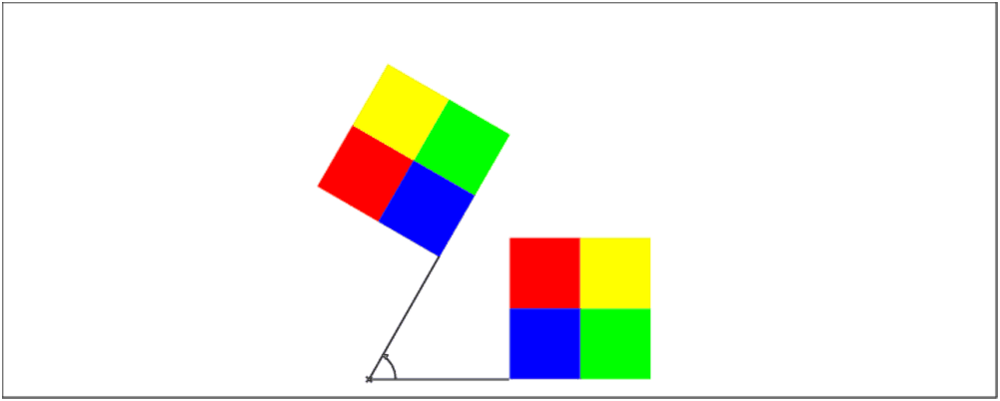
On tape :
C1:=carre(i,1+i,affichage=1+rempli):;C1; rotation(-2,pi/3,C1,affichage=1+rempli); C2:=carre(1,2,affichage=2+rempli):;C2; rotation(-2,pi/3,C2,affichage=2+rempli); C3:=carre(i+1,2+i,affichage=3+rempli):;C3; rotation(-2,pi/3,C3,affichage=3+rempli); C4:=carre(0,1,affichage=4+rempli); rotation(-2,pi/3,C4,affichage=4+rempli):;C4; C:=point(-2); O1:=rotation(C,pi/3,point(0)):; segment(C,point(0),affichage=ligne_tiret_point)); segment(C,O1,affichage=ligne_tiret_point)); angle(C,point(0),O1,"pi/3");
On obtient :
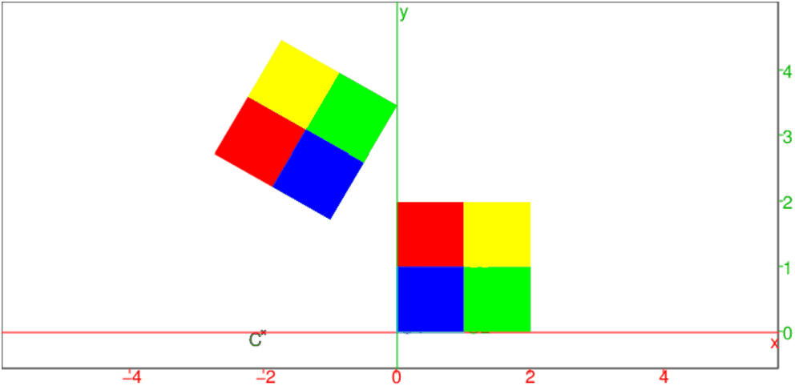
Un exercice
Sur les côtés d’un triangle ABC quelconque, on construit 3 carrés
ACDE, BAFG et BHIC puis 2 parallélogramme BGJH et CIKD.
Démontrer que le triangle AJK est rectangle isocèle.
Une solution
On fait la figure, on clique sur 3 points A,B,C puis on tape :
triangle(A,B,C); carre(A,C,D,E); carre(C,B,H,I); carre(B,A,F,G); parallelogramme(H,B,G,J); parallelogramme(D,C,I,K); segment(A,J,affichage=1); segment(A,K,affichage=1); G1:=symetrie(B,G); segment(B,G1,affichage=2); segment(K,G1,affichage=2); segment(K,C); angle(C,I,K,"");angle(B,C,A,""); angle(G,J,B,"");angle(K,D,C,""); angle(D,C,K,"gamma"); angle(C,A,B,"gamma"); segment(B,J); angle(J,B,G,"gamma"); segment(A,G);segment(A,G1);
On obtient :
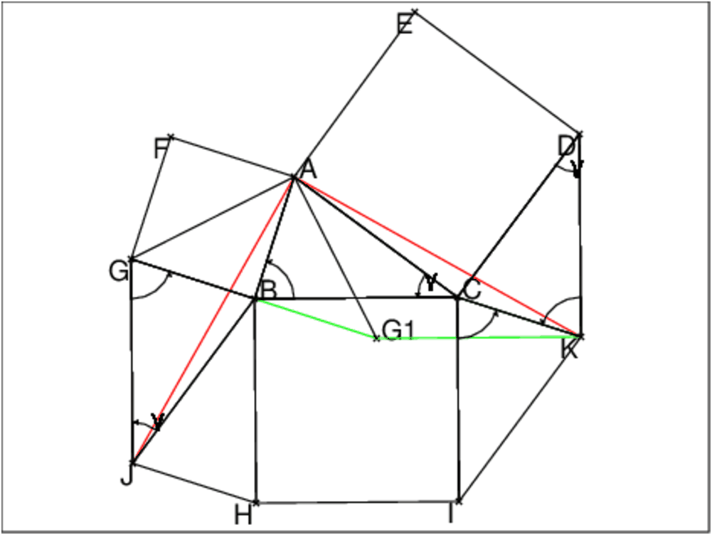
On remarque tout d’abord que les triangles BGJ, JHB, KCI et CKD sont
égaux au triangle ABC. En effet pour BGJ, on a BG=AB, GJ=BC et
l’angle G est égale à B comme angle à côtés perpendiculaires.
donc le triangle BGJ est égal à ABC.
De même CKD est égal à ABC l’angle D est égale à BC comme
angle à côtés perpendiculaires.
De plus BGJ est aussi égal à JHB et CKD est aussi égal à KCI
puisque BGJH et CIKD sont des parallélogrammes.
Donc le triangle BGJ est égal au triangle KCI, donc CK est parallèle
à BG. Si G1 est le symétrique de G par rapport à B on en déduit que le quadrilatère BG1KC est un parallélogramme.
On va chercher le transformé de J par la rotation de centre A et d’angle
+π/2 si ABC est direct et −π/2 sinon.
Supposons le triangle ABC est direct.
La rotation de centre A et d’angle +π/2 transforme G en G1 et J en
J1. Le segment G1J1 a pour longueur BC et est perpendiculaire à GJ
donc parallèle à BC.
AGG1 est un triangle rectanlgle isocèle qui admet AB comme bissectrice
donc G1 est le symétrique de G par rapport à B.
Le quadrilatère BG1J1C est donc le parallélogramme BG1KC et J1 et K
sont confondus. Le triangle AJK est donc rectangle isocèle.
Définition
La symétrie par rapport à une droite d est une transformation
ponctuelle qui, à un point M fait correspondre un point M′ tel que
le segment MM′ soit perpendiculaire à d en son milieu i.e.d est la
médiatrice de MM′
La symétrie par rapport à un point O est une rotation de centre O et
d’angle π (cf rotation pour les propriétés).
Propriétés de la symétrie droite
La transformée d’une droite est une droite.
Le transformé d’un cercle est un cercle de même rayon.
La symétrie transforme un angle en son opposé.
Avec Xcas
symetrie(droite(A,B),M) ou symetrie(A,B,M) désigne le transformé
de M dans la symétrie par rapport à la droite AB.
symetrie(O,M) désigne le transformé
de M dans la symétrie de centre O.
Une visualisation
On considère la symétrie par rapport à la droite passant par
A:=point(0) et B:= point(-1/2+i).
On veut visualiser l’image par cette symétrie des 4 carrés :
C1, C2, C3, C4.
On tape :
C1:=carre(i,1+i,affichage=1+rempli); C2:=carre(1,2,affichage=2+rempli); C3:=carre(i+1,2+i,affichage=3+rempli); C4:=carre(0,1,affichage=4+rempli) symetrie(droite(0,-1/2+i),C1,affichage=1+rempli); symetrie(droite(0,-1/2+i),C2,affichage=2+rempli); symetrie(droite(0,-1/2+i),C3,affichage=3+rempli); symetrie(droite(0,-1/2+i),C4,affichage=4+rempli); droite(0,-0.5+i)
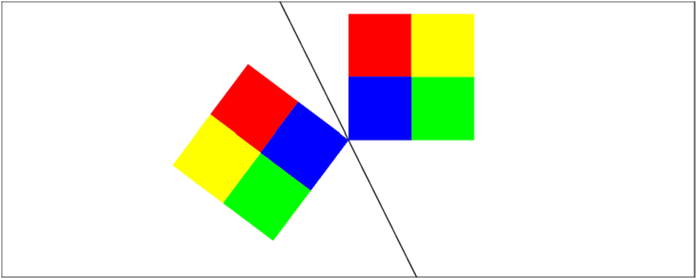
Définition
L’homothétie de centre O et de rapport k est une transformation
ponctuelle qui, à un point M fait correspondre un point M′ tel que :
OM′=kOM
Propriétés
Soient 2 points A et B et leurs transformés A′ et B′ par
l’homothétie de centre O et de rapport k.
On a :
A′B′=kAB.
La transformée d’une droite est une droite parallèle.
Le transformé d’un cercle de rayon R est un cercle de rayon kR.
L’homothétie conserve les angles.
Avec Xcas
homothetie(O,k,M) désigne le transformé
de M dans l’homothétie de centre O et de rapport k.
Une visualisation
On considère la homothétie de centre C=(−2,0) et de rapport 1/2.
On veut visualiser l’image par cette homothétie des 4 carrés :
C1, C2, C3, C4.
On tape :
C1:=carre(i,1+i,affichage=1+rempli); homothetie(-2,1/2,C1,affichage=1+rempli); C2:=carre(1,2,affichage=2+rempli); homothetie(-2,1/2,C2,affichage=2+rempli); C3:=carre(i+1,2+i,affichage=3+rempli); homothetie(-2,1/2,C3,affichage=3+rempli); C4:=carre(0,1,affichage=4+rempli); homothetie(-2,1/2,C4,affichage=4+rempli); C:=point(-2)
On obtient :
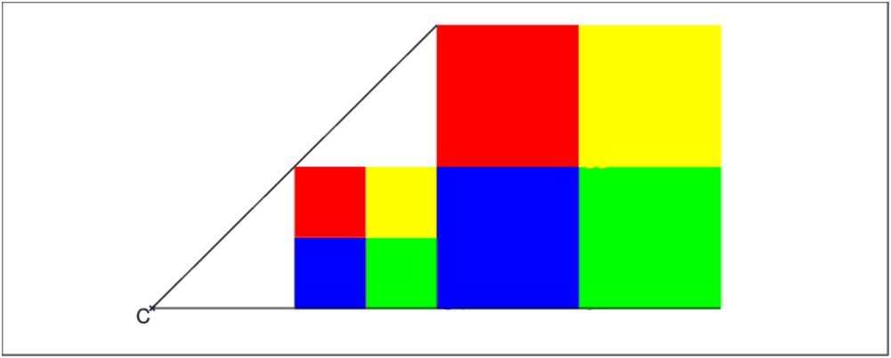
Définition
La similitude de centre O, de rapport k et d’angle t est une
transformation ponctuelle qui, à un point M fait correspondre un point M′
tel que :
OM′=k*OM et (OM,OM′)=t
Propriétés
Soient 2 points A et B et leurs transformés A′ et B′ par
la similitude de centre O de rapport k et d’angle t.
On a :
A′B′=kAB et (AB,A′B′)=t.
La transformée d’une droite est une droite.
Le transformé d’un cercle de rayon R est un cercle de rayon kR.
La similitude conserve les angles.
Avec Xcas
similitude(O,k,t,M) désigne le transformé
de M dans la similitude de centre O, de rapport k et d’angle t.
Une visualisation
On considère la similitude de centre C=(−2,0) et de rapport 1/2 et d’angle 2*pi/3.
On veut visualiser l’image par cette similitude des 4 carrés :
C1, C2, C3, C4.
On tape :
C1:=carre(i,1+i,affichage=1+rempli); similitude(-2,1/2,2*pi/3,C1,affichage=1+rempli); C2:=carre(1,2,affichage=2+rempli); similitude(-2,1/2,2*pi/3,C2,affichage=2+rempli); C3:=carre(i+1,2+i,affichage=3+rempli); similitude(-2,1/2,2*pi/3,C3,affichage=3+rempli); C4:=carre(0,1,affichage=4+rempli); similitude(-2,1/2,2*pi/3,C4,affichage=4+rempli); C:=point(-2)
On obtient :
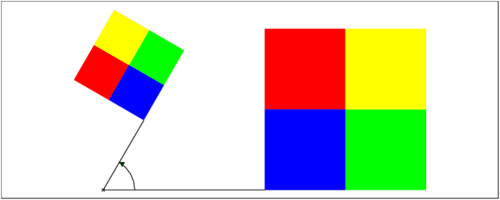
Définition
Une inversion de centre C et de puissance k est une transformation
ponctuelle qui, à un point M fait correspondre un point M′ tel que :
OM*OM′=k
Propriétés
Deux points quelconques et leurs inverses sont cocycliques ou sont alignés
avec le centre d’inversion.
L’inverse d’une droite passant par le centre d’inversion est elle-même.
L’inverse d’une droite ne passant pas par le centre d’inversion est un cercle
passant par le centre d’inversion dont le diamètre est perpendiculaire à
la droite.
Avec Xcas
inversion(C,k,M) désigne le point inverse de M dans l’inversion de
centre C et de puissance k.
Une visualisation
On considère l’inversion de centre 0 et de puissance 1.
On veut visualiser l’image par cette inversion des 3 carrés :
carre(i,1+i,affichage=1+rempli),
carre(i+1,2+i,affichage=3+rempli),
carre(1,2,affichage=2+rempli)
Pour pouvoir remplir une figure ayant comme contour des arcs de cercles on va
écrire une procédure qui trace les arcs avec des polygones.
On tape :
arcpoly(z0,r,a,b):={
return seq(z0+r*exp(i*t),t=a..b,0.05),z0+r*exp(i*b);
}:;
arccorde(z0,r,a,b,coul):={
local L;
L:=arcpoly(z0,r,a,b);
return polygone(L,affichage=coul+rempli)
}:;
arcpolyepais(z0,r,a,b,ep,coul):={
local L;
L:=z0+(r-ep)*exp(i*a),z0+r*exp(i*a),arcpoly(z0,r,a,b),
z0+(r)*exp(i*b),z0+(r-ep)*exp(i*b),arcpoly(z0,r-ep,b,a);
return affichage(polygone(L),c+rempli);
}:;
Ainsi arccorde dessinera la surface comprise entre l’arc et la corde avec
la couleur coul et arcpolyepais dessinera la surface comprise entre
2 arcs, l’un de rayon r et l’autre de rayon r-ep avec la couleur
coul.
On tape :
triangle(1,1+i,i,affichage=4+rempli), polygone(a1,a2,a3,affichage=1+rempli), polygone(b1,b2,b3,affichage=2+rempli), polygone(a2,b2,c1,c2,affichage=3+rempli), carre(i,1+i,affichage=1+rempli), carre(i+1,2+i,affichage=3+rempli), carre(1,2,affichage=2+rempli),legende(0,"O")
On obtient :
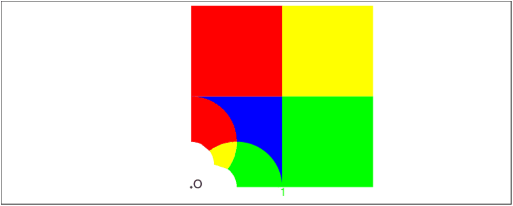
Les figures de même couleur sont inverses l’une de l’autre (en particulier
les inverses des points de la figure bleue sont aussi dans la figure bleue qui
est globalement invariante)
Voici les cercles de Pappus :
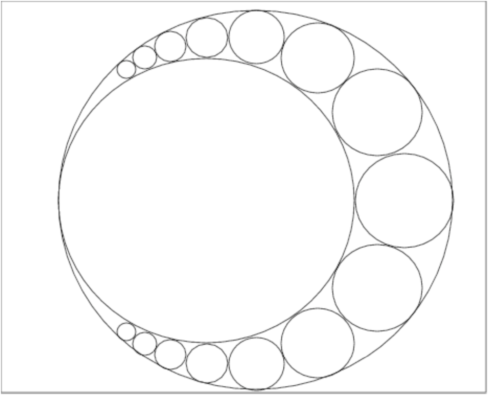
Théorème :
Si Γ est le grand cercle de diamètre b, C le cercle "moyen" de
diamètre a (a<b) est tangent intérieurement à Γ en A et les
petits cerclescj,..c1,c0,c1..cj sont tangents à Γ et à
C et cj est tangent à cj+1.
Les cercles Γ, C et c0 sont centrés sur la droite D.
Le théorème de Pappus dit que si rj et le rayon de cj et si dj est
la distance du centre de cj à D alors d1=2r1 et dj=2*j*rj pour
j=0..n.
De plus les points de tangences des cercles cj et cj+1 sont sur un
cercle de diamètre 2ab/a+b, tangent en A à Γ et C.
Construction des cercles de Pappus.
On va utiliser une inversion qui transforme Γ et C en 2 droites
parallèles d1 et d2. Cette inversion aura comme centre le point A
commun à Γ et C. Les cercles ck seront transformés en des
cercles qui seront tangents à ces 2 droites : les transformés seront donc
des cercles égaux. et les points de tangences de ces cercles sont sur la
parallèle équidistante à d1 et d2.
Voici la fonction qui renvoie le transformé d’un cercle c, son centre et
son rayon (lorsque ce transformé est un cercle) par l’inversion de centre A
et de puissance k :
inversionc(A,k,c):={
local p,O1,r1,O,r,B,B1;
O:=centre(c);
r:=rayon(c);
si est_element(A,c) alors
B:=symetrie(O,A);
B1:=inversion(A,k,B);
return perpendiculaire(B1,droite(O,A)); fsi;
si A==O alors return cercle(O,k/r),O,k/r; fsi;
p:=puissance(c,A);//p:=longueur2(A,O)-r^2
r1:=k*r/p;
O1:=inversion(A,k,projection(polaire(c,A),A));
return cercle(O1,r1),O1,r1;
}:;
on a
r1=k*r/(AO2−r2)
O1 est l’inverse du point d’affixe
(r2+(xA−i*yA)*(xO+i*yO)−(xO2+yO2))/(xA−xO+(−i)*(yA−yO))
On tape :
k:=24; Gamma:=cercle(point(2),2):;Gamma; C:=cercle(point(3/2),3/2):;C; d1:=inversionc(0,k,Gamma):;d1; d2:=inversionc(0,k,C):;d2[0]; c0:=cercle(point(6),point(8)); c1:=cercle(7+2*i,1):; C0:=inversionc(point(0),k,c0);;C0[0]; C1:=inversionc(point(0),k,c1):;C1[0]; L:=cercle(7+2*k*i,1)$(k=-7..7):;L; L1:=inversionc(0,k,L[j])$(j=0..14):;L1[0];
On obtient :
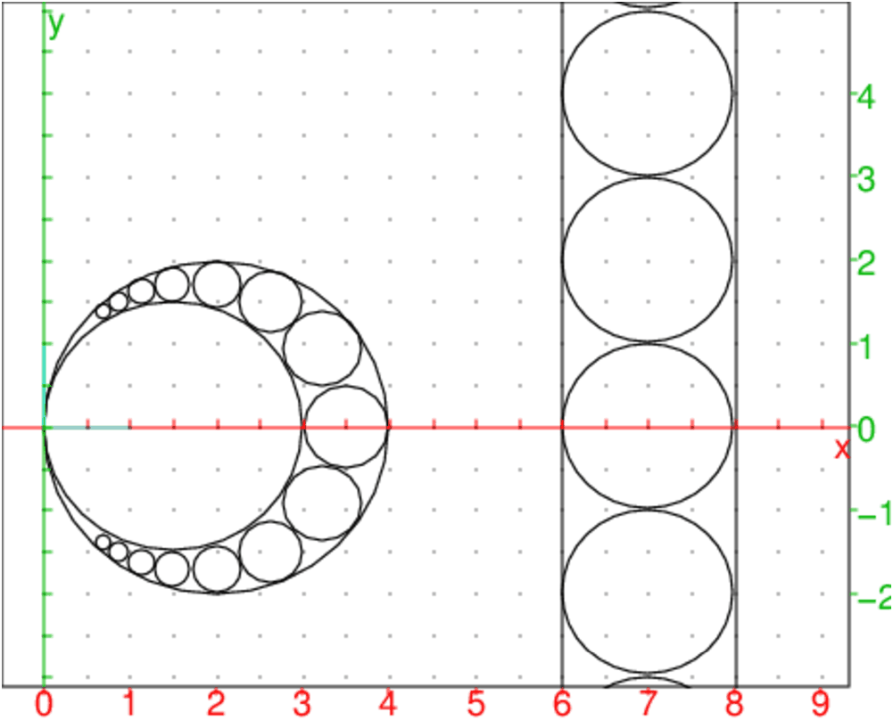
Démonstration du théorème de Pappus avec Xcas
On prend comme origine A le centre de l’inversion, et comme axe des x la
droite des centres.
Γ est le cercle de diamètre A point(b) et C est le cercle de
diamètre A point(a).
Γ se transforme par l’inversion de centre A et de puissance k en la
droite d’équation x=k/b
C se transforme par l’inversion de centre A et de puissance k en la
droite d’équation x=k/a
Le cercle des points de tangence des cercles cj est donc le transformé par
l’inversion de centre A et de puissance k de la droite d’équation
x=(k/b+k/a)/2=k(a+b)/(2ab) c’est donc le cercle de diamètre
A point(2a*b/(a+b)).
Le cercle c0 est de diamètre AB et son transformé C0
dans l’inversion de centre A et de puissance k a pour centre
point(k/2*(1/a+1/b)) et comme rayon r:=k/2*(1/a-1/b).
On considère donc le cercle Cj de rayon
r:=k/2*(1/a-1/b) et de centre oj:=point(k/2*(1/a+1/b)+i*2*j*r);
Soit cj l’inverse de Cj dans
l’inversion de centre A et de puissance k.
On cherche l’ordonnée du centre et du rayon de cj.
On tape :
A:=point(0); assume(a=[3,0,10,0.1]); assume(b=[4,a,10,0.1]);; cercle(A,point(a)); cercle(A,point(b)); supposons(k=[23.9,0,25,0.1]); c0:=cercle(point(a),point(b)); C0:=inversionr(A,k,c0); supposons(j=[1,0,7,1]); r:=k/2*(1/a-1/b); oj:=point(k/2*(1/a+1/b)+i*2*j*r); Cj:=cercle(oj,r); cj:=inversionr(A,k,Cj); cj[0]; dj:=simplify(ordonnee(cj[1])); rj:=simplify(ordonnee(cj[1])/cj[2]); simplify(ordonnee(dj/rj);
On obtient pour dj :
(-a^2*b*j+a*b^2*j)/(a^2*j^2-2*a*b*j^2+a*b+b^2*j^2)
On obtient pour rj :
(-a^2*b+a*b^2)/(2*a^2*j^2-4*a*b*j^2+2*a*b+2*b^2*j^2)
On obtient pour dj/rj :
(2*j
Donc Xcas a démontré que dj=2jrj.
Un père possède un terrain triangulaire. Il veut forer un puits à l’intérieur de son terrain, de façon qu’á sa mort chacun de ses 3 fils possède un morceau triangulaire de même surface ayant accès au puits.
Soit ABC le terrain initial et P l’emplacement du puits.
Chaque fils aura comme morceau ABP ou APC ou BCP et ces morceaux
doivent avoir même aire qui est le tiers de l’aire de ABC.
Donc la hauteur de ABP doit être le tiers de la hauteur de ABC issue de
C et la hauteur de BCP doit être le tiers de la hauteur de ABC issue de
A.
Avec Xcas on clique sur 3 points et on
tape dans un ècran de géométrie :
triangle(A,B,C); I:=A+(C-A)/3; dc:=parallele(I,droite(B,A)); J:=A+2*(C-A)/3; da:=parallele(J,droite(B,C)); P:=inter_unique(da,dc); affichage ([segment(P,A),segment(P,B),segment(P,C)],rouge) K:=B+(A-B)/3
On obtient :
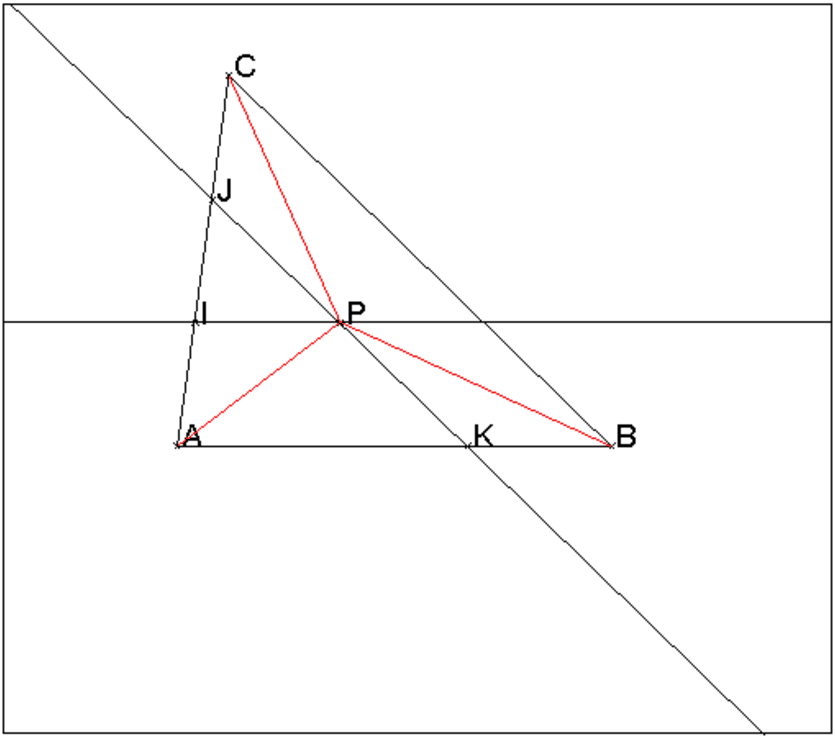
On tape pour vérifier :
aire(A,B,P),aire(B,C,P),aire(C,A,P)
Propriétés du point P
I est le milieu de AJ, IP est parallèle à AK
donc P est le milieu de KJ.
AP est une médiane de AKJ, KJ est parallèle à BC
donc AP est une médiane de ABC.
On montrerait de même que BP et CP sont des médianes de
ABC.
P est donc le centre de gravité du triangle ABC ou encore
l’isobarycentre des 3 points A,B,C.
On tape pour vérifier :
affichage(isobarycentre(A,B,C),point_width_2)
Un père possède un terrain triangulaire et a n fils (n=3,4,5...).
Il veut forer un puits à l’intérieur de son terrain, de façon qu’á sa
mort, chacun de ses n fils possède un morceau triangulaire de même
surface ayant accès au puits. Déterminer le nombre de solutions possibles.
Pour n=4, on cherche 2 points P et D avec D
par exemple sur BC (il y a donc 3 solutions selon que l’on choisit
D sur BC ou sur AC ou sur AB)
pour que chaque fils ait comme morceau ABP ou APC ou BDP ou DCP
et que ces morceaux soient de même aire à savoir le quart de l’aire de
ABC.
Avec Xcas on clique sur 3 points et on
tape dans un ècran de géométrie :
triangle(A,B,C);
I:=A+(C-A)/4;
dc:=parallele(I,droite(B,A));
J:=A+(C-A)/2;
da:=parallele(J,droite(B,C));
P:=inter_unique(da,dc);
D:=milieu(B,C);
affichage ([segment(P,A),segment(P,B),segment(P,C),
segment(P,D)],rouge);
K:=B+(A-B)/2;
On obtient :
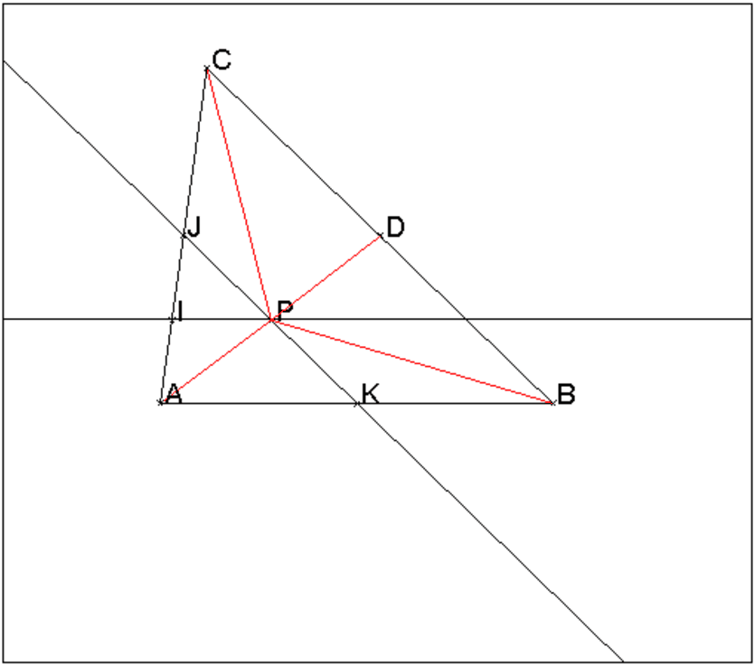
On tape pour vérifier :
aire(A,B,P),aire(B,D,P),aire(C,A,P),aire(D,C,P)
Propriétés du point P
I est le milieu de AJ, IP est parallèle à AK
donc P est le milieu de KJ.
AP est une médiane de AKJ, KJ est parallèle à BC
donc AP est la médiane AD de ABC.
De plus P est le milieu de AD puisque J est le milieu de
AC, JP est parallèle à DC .
P est donc le barycentre des 3 points [A,2],[B,1],[C,1].
On tape pour vérifier :
affichage(barycentre([A,2],[B,1],[C,1]),point_width_2).
Les 2 autres solutions, pour l’emplacement du puits, sont obtenues avec :
affichage(barycentre([A,1],[B,2],[C,1]),point_width_2)
affichage(barycentre([A,1],[B,1],[C,2]),point_width_2)
Pour n=5, on cherche 3 points P, D et E avec D et E sur un
même côté par exemple sur BC ou D et E sur des
côtés différents par exemple D sur BC et E
par exemple sur AC (il y a donc en tout 6 solutions : 3 solutions selon
que l’on choisit D et E sur BC ou sur AC ou sur
AB et 3 solutions selon que l’on choisit D et E pas sur
BC ou pas sur AC ou pas sur AB)
pour que chaque fils ait comme morceau un triangle de sommets pris parmi
A,B,C,D,E,P
et que ces morceaux soient de même aire à savoir le cinquième de l’aire
de
ABC.
Avec Xcas on clique sur 3 points et on
tape dans un ècran de géométrie :
triangle(A,B,C);
I:=A+(C-A)/5
dc:=parallele(I,droite(B,A));
J:=A+2*(C-A)/5;
da:=parallele(J,droite(B,C));
P:=inter_unique(da,dc);
D:=B+(C-B)/3;
E:=B+2*(C-B)/3;
affichage ([segment(P,A),segment(P,B),segment(P,C),
segment(P,D),segment(P,E)],rouge)
K:=B+3*(A-B)/5;
affichage(barycentre([A,3],[B,1],[C,1]),point_width_2);
On obtient :
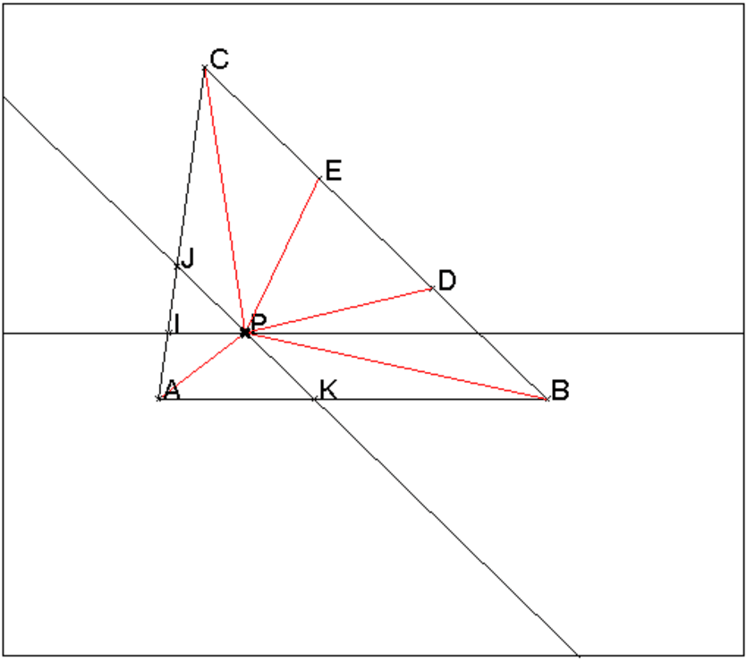
On tape pour vérifier :
aire(A,B,P),aire(B,D,P),aire(C,A,P),aire(D,E,P),aire(E,C,P)
Propriétés du point P
I est le milieu de AJ, IP est parallèle à AK
donc P est le milieu de KJ.
AP est une médiane de AKJ, KJ est parallèle à BC
donc AP est la médiane de ABC.
De plus P est situé au 2/5 de cette médiane de AD puisque
J est situé au 2/5 de AC, JP est parallèle à DC.
Donc l’aire de PBC vaut les 3/5 de l’aire de ABC
P est donc le barycentre des 3 points [A,3],[B,1],[C,1].
On tape pour vérifier :
affichage(barycentre([A,2],[B,1],[C,1]),point_width_2).
On voit le partage en rouge sur la figure lorsque le puits est en P.
Les 2 autres solutions, pour l’emplacement du puits lorsque l’on choisit
D et E sur le même côté, sont obtenues avec :
affichage(barycentre([A,1],[B,2],[C,1]),point_width_2)
affichage(barycentre([A,1],[B,1],[C,2]),point_width_2)
Les 3 autres solutions, pour l’emplacement du puits lorsque l’on choisit
D et E sur des côtés, sont obtenues avec :
affichage(barycentre([A,2],[B,2],[C,1]),point_width_2)
affichage(barycentre([A,2],[B,1],[C,2]),point_width_2)
Q:=affichage(barycentre([A,1],[B,2],[C,2]),point_width_2)
On voit le partage en vert sur la figure lorsque le puits est en Q :
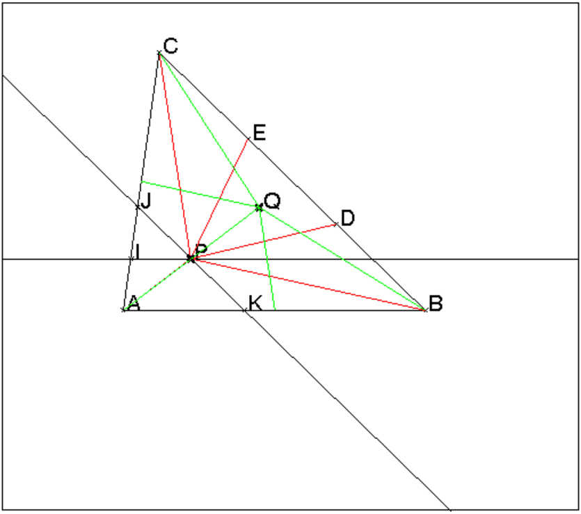
On généralise aisément.
On montre par récurrence que le nombre de solutions pour n (n>3) est :
(n−2)(n−1)/2.
En effet on cherche le nombre de triplets d’entiers non nuls de somme n i.e.
on cherche le nombre de triplets (a,b,c)∈ ℕ*3 vérifiant
a+b+c=n.
pour n=3 ce nombre est 1=(n−2)(n−1)/2 car (1+1+1=3)
Hypothèse de recurrence : pour n ce nombre est (n−2)(n−1)/2,
pour n+1, on cherche le nombre de
triplets d’entiers non nuls de somme n+1 :
si a+b+c=n+1, c’est que a+b<n+1 car c ≠ 0
Donc le problème revient à chercher le nombre de couples (a,b) d’entiers
non nuls de somme strictement inférieure à n+1. Par hypothèse de
recurrence, le nombre de couples (a,b) d’entiers
non nuls de somme strictement inférieure à n est (n−2)(n−1)/2. Il reste
donc à comptabiliser les couples (a,b) d’entiers
non nuls de somme n : il y en n−1 puisque a peut prendre n−1 valeurs.
Donc le nombre de triplets d’entiers non nuls de somme n+1 est :
(n−2)(n−1)/2+n−1=(n−1)(n−2+2)/2=(n−1)n/2.
On a ainsi montrer par récurrence que le nombre de solutions pour le partage
en n triangles de même aire est (n−2)(n−1)/2.
Il est interessant de voir alors la disposition des différents puits les uns
par rapport aux autres : il forme un reseau triangulaire de côté n−2
et on retrouve alors le nombre de puits avec la formule :
1+2+...+(n−2)=(n−2)(n−1)/2.
Il existe une différence subtile entre le sigle CE "Comformité Européenne"
indiquant que le produit répond à des normes de sécurité et qu’il peut
circuler librement en Europe et le sigle CE signifiant "China Export".
Seul l’espace entre le C et le E et différent : dans le sigle chinois le C et
le E sont plus proches.
Alors soyez vigilant !
On tape :
cercle(-5,5); cercle(-5,4); cercle(4,5); cercle(4,4); c1:=cercle(-5,5,pi/2,3*pi/2,affichage=rempli); c2:=cercle(-5,4,pi/2,3*pi/2,affichage=rempli+ 7); c3:=cercle(4,5,pi/2,3*pi/2,affichage=rempli); c4:=cercle(4,4,pi/2,3*pi/2,affichage=rempli+ 7); rectangle(i/2,-i/2,4,affichage=rempli); papier_quadrille(1,pi/2,x=-11..10,y=-6..6);
On obtient :
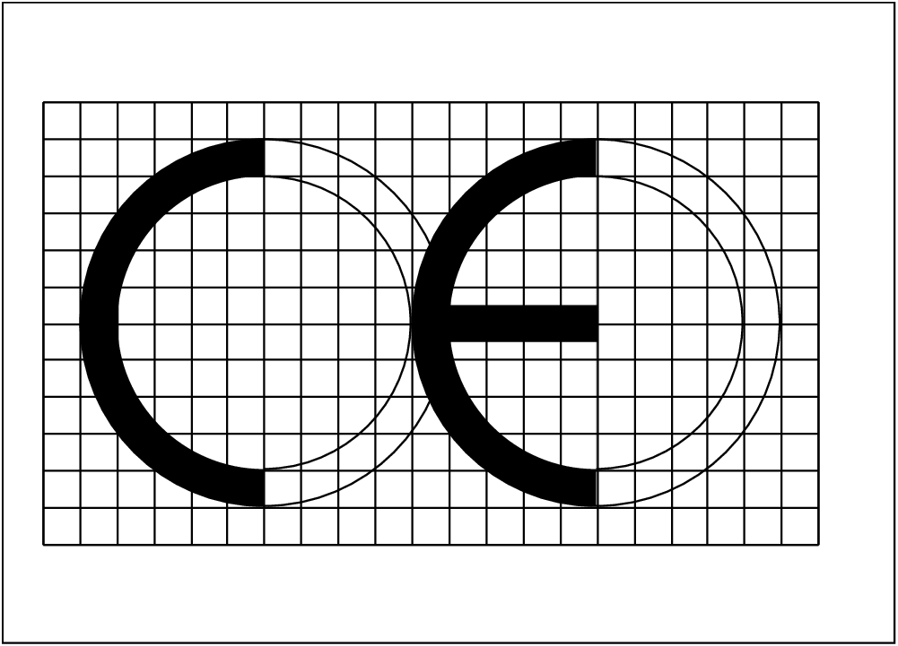
On tape :
cercle(1,5); cercle(1,4); c1:=cercle(-5,5,pi/2,3*pi/2,affichage=rempli); c2:=cercle(-5,4,pi/2,3*pi/2,affichage=rempli+ 7); c5:=cercle(1,5,pi/2,3*pi/2,affichage=rempli); c6:=cercle(1,4,pi/2,3*pi/2,affichage=rempli+ 7); rectangle(-3+i/2,-3-i/2,4,affichage=rempli); papier_quadrille(1,pi/2,x=-11..10,y=-6..6); cercle(-5,5); cercle(-5,4);
On obtient :
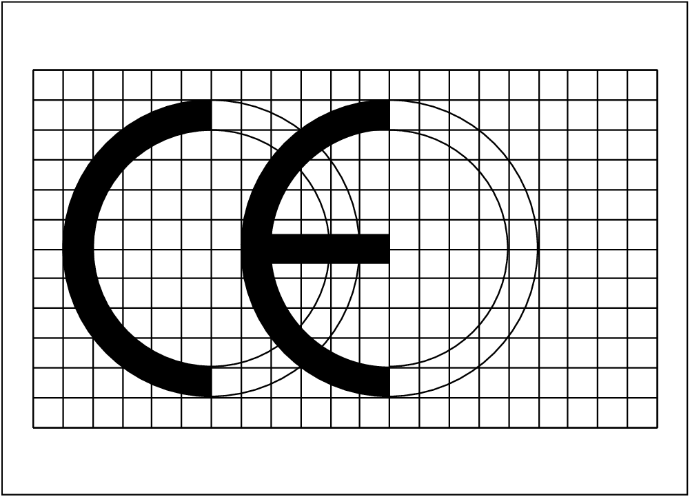
Soient ABC un triangle et M un point qui se déplace sur le segment BC. Soit I (resp J) le centre du cercle inscrit au triangle ABM (resp ACM). Montrer que le cercle de diamètre IJ passe par un point fixe lorsque le point M se déplace sur le segment BC.
Soient c est un cercle de diamètre AB et une corde MP avec M et P
situé d’un même côté de AB.
Soient A1 et B1 les projections respectives de A et B sur MP.
Alors
| = |
| ||||||||||||

En effet le centre de c est le milieu de AB et donc il se projette sur le
milieu de MP. Comme le milieu de AB se projette sur le
milieu O1 de A1B1, on a A1B1 et MP ont même milieu.
Donc :
| = |
| + |
| = |
| + |
| = |
| ||||||||||||||||||||||||||||||||||||
Soient ABC un triangle et K le centre de son cercle inscrit.
Alors K est le barycentre des points [A,a],[B,b],[C,c] où a,b,c sont
les longueurs des côtés BC, AC, AB.
Si la bissectrice intérieure de l’angle A coupe BC en A1 on a : A1B/A1C=c/b donc b*A1B=c*A1C ou encore puisque A1 se trouve sur le segment BC :
| b* |
| +c* |
| =0 | ||||||||||||
donc A1 est le barycentre de [B,b],[C,c].
Si la bissectrice intérieure de l’angle B coupe AC en B1 on a : B1A/B1C=c/a donc a*B1A=c*B1C ou encore puisque B1 se trouve sur le segment AC :
| a* |
| +c* |
| =0 | ||||||||||||
donc B1 est le barycentre de [A,a],[C,c].
Donc le barycentre des points [A,a],[B,b],[C,c] est l’intersection de
AA1 et de BB1 c’est à dire l’intersection des bissectrices K
qui est le centre du cercle inscrit.
Soient un triangle ABC et K1 un point de la droite BC.
Alors K1 est la projection sur BC du centre du cercle inscrit à ABC si
et seulement si :
| K1B−K1C=AB−AC |
Soit K le centre du cercle inscrit à ABC.
Soient K1, K2 et K3 les projections respectives de K sur BC, AC et
AB.
Puisque les côtés AB,AC,BC sont des tangentes au cercle inscrit et que
K1,K2,K3 sont les points de contact de ces tangentes, on a :
| BK1=BK3, CK1=CK2, AK2=AK3 |
et K1, K2 et K3 se trouvent respectivement sur les segments sur BC, AC et AB. Donc :
| AB−AC=AK3+K3B−(AK2+K2C)=K1B−K1C |
Soit K1 tel que K1B−K1C=AB−AC.
Le point K1 se trouve sur le segment BC en effet si K1 était à
l’exterieur de BC on aurait |K1B−K1C|=|BC|>|AB−AC| d’apres l’inégalité
triangulaire ce qui condredit l’hypothèse K1B−K1C=AB−AC.
L’égalité K1B−K1C=AB−AC définit un seul point K1 du segment BC, ce
point est donc la projection du centre du cercle inscrit à ABC
Pour la solution géométrique, on va se servir des lemmes 1 et 3. La bissectrice de l’angle BMA et la bissectrice de l’angle CMA sont perpendiculaire donc M est sur le cercle de diamétre IJ. Ce cercle coupe le segment BC en M et P. Montrons que P est fixe. Soient I1 et J1 les projections de I et J sur BC.
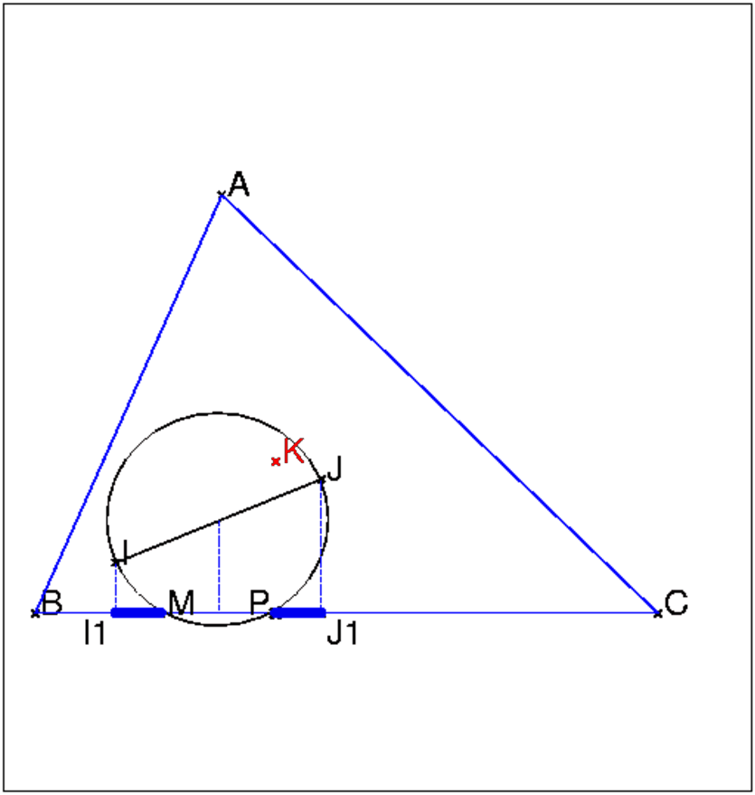
D’après le lemme3 on a :
I1B−I1M=AB−AM et
J1M−J1C=AM−AC donc
| I1B−I1M+J1M−J1C=AB−AM+AM−AC=AB−AC |
Puisque I1 et J1 sont entre B et C, et que M et P sont entre
I1 et J1, on a M et P sont entre B et C.
D’après le lemme1 on a :
I1M=PJ1 et
I1P=MJ1 donc
| I1B−I1M+J1M−J1C=I1B−PJ1+I1P−J1C |
M et P sont entre B et C donc I1B+I1P=PB et PJ1+J1C=PC d’où :
| PB−PC=AB−AC |
Le point P est fixe et P est la projection du centre K du cercle inscrit à ABC.
Le choix des paramètres est important !
Sans perte de généralité, on peut prendre l’origine du repère en B,
et C sur l’axe des x d’abscisse a. Le point M est donc sur l’axe des
x d’abscisse m<a .
Si on choisit comme paramètres les coordonnèes de A, Xcas n’arrive
pas à faire les calculs (cf la remarque ci-après). Mais si on choisit comme paramètres les longueurs
b et c des côtés AC et AB les calculs sont simples même si
on ne définit pas les centres des cercles inscrits comme des barycentres :
on peut indifférement mettre pour définir I :
I:=barycentre([A,m],[B,l1],[M,c]); (cf lemme2) ou
I:=normal(centre(inscrit(A,B,M))); (idem pour définir J et K)
On tape :
B:=point(0);
supposons(a=[1,0,2,0.1]);
C:=point(a);
supposons(b=[0.9,0,2,0.1]);
supposons(c=[1.1,0,2,0.1]);
A:=inter(cercle(B,c),cercle(C,b))[1];
triangle(A,B,C);
supposons(m=[0.4,0,a,0.1]);
M:=point(m);
b1:=longueur(A,M);
I:=barycentre([A,m],[B,b1],[M,c]);
J:=barycentre([A,a-m],[C,b1],[M,b]);
K:=barycentre([A,a],[B,b],[C,c],affichage=1);
I1:=projection(droite(y=0),I,affichage=quadrant3);
J1:=projection(droite(y=0),J,affichage=quadrant4);
K1:=projection(droite(y=0),K,affichage=quadrant2+
epaisseur_point_2);
On obtient :
On tape :
On obtient :
cela prouve le lemme3 puisque CK1=a−BK1 on a :
| BK1−CK1=2*BK1−a=c−b=AB−AC |
On tape en se servant du lemme1 pour définir P :
On obtient :
Donc P est fixe.
On tape :
On obtient :
Donc P et K1 sont confondus.
Remarque
On peut aussi faire faire le calcul à Xcas avec au départ plus de
paramètres que nécessaire et donner ensuite les relations entre ces
paramètres seulement à la fin des calculs.
On choisit comme paramètres :
a1 l’abscisse de A,
a l’abscisse de C,
m l’abscisse de M,
b1 la longueur de AM,
b la longueur de AC,
c la longueur de AB.
cos(B) le cosinus de l’angle B qu triangle ABC
Ces paramètres vérifient :
a1=c*cos(B)
b12=m2+c2−2m*c*cos(B)
b2=c2+a2−2a*c*cos(B)
Si on note i1 l’affixe de I1, j1 l’affixe de J1 et p1 l’affixe de
P1, on a, avec les notations précédentes, PB−PC=2*PB−a.
On tape :
i1:=affixe(barycentre([point(a1),m],[point(0),b1],[point(m),c]));
j1:=affixe(barycentre([point(a1),a-m],[point(m),b],[point(a),b1]));
p1:=simplify(i1+j1-m);
res:=simplify(2*p1-1);
res:=simplify(subst(subst(res,[a1=c*cos(B),b1^2=m^2+c^2-2*m*c*cos(B)]),
cos(B)=(-b^2+c^2+a^2)/(2*c*a)));
On obtient alors facilement pour PB−PC=2*PB−a=res :
-b+c
Donc PB−PC=c−b=AB−AC.
Ce problème a ète donné aux olympiades académiques de 2005.
Soit une feuille de papier rectangulaire ABCD de côtés AB=4 unités
et BC=6 unités.
Soient R un point du segment AB et, T un point du segment
CB. R et T sont tels que si on plie la feuille selon le segment RT
le point B se trouve sur le segment AD. On appelle S le point du segment
AD qui coincide avec B lors du pliage.
On pose AR=a et BT=b.
On peut faire la figure à l’aide d’une feuille de papier que l’on plie de façon à amener le coin B de la feuille sur AD ou bien, on utilise Xcas mais alors :
A:=point(0); B:=point(4); C:=point(4+6*i); D:=point(6*i); quadrilatere(A,B,C,D); assume(s=[2,0,6]); S:=point(s*i); m:=mediatrice(B,S); R:=inter_unique(m,droite(A,B)); T:=inter_unique(m,droite(C,B)); equation(m); r:=coordonnees(R); t:=normal(coordonnees(T)); AT:=aire(triangle(R,B,T));On obtient :
On tape (voir minia.xws):
A:=point(0); B:=point(4); C:=point(4+6*i); D:=point(6*i); quadrilatere(A,B,C,D); assume(a=[1,0,4]); R:=point(a); S:=inter(cercle(R,4-a),segment(A,D))[0]; m:=mediatrice(B,S); T:=inter_unique(m,droite(C,B)); equation(m); coordonnees(S); normal(coordonnees(T)); AT:=aire(triangle(R,B,T)); plotfunc(AT-5,a); segment(R,a+i*(AT-5));
Dans les 2 cas, on obtient, après réglage de la fenêtre graphique, la figure :
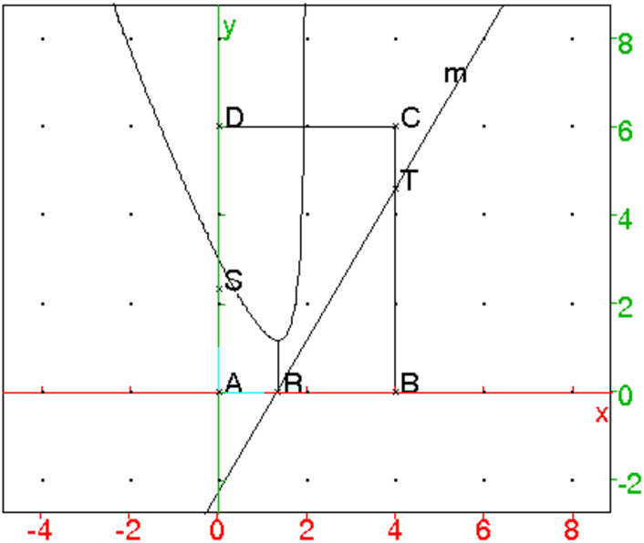
On obtient :
^2-16)/(2*s))^2+2,0]^2+16)/(2*s)]^2+16)/2/s*(1/8*s^2+2)/2^2+a*b^2-16*a-2*b^2+32)
donc 2*a^2+a*b^2-16*a-2*b^2+32=0
^2-a^2)]^2*(a-2)^2-(a-4)^2*(4-2*a))=0
(a-2)*(b^2*a-2*b^2+2*a^2-16*a+32)=0
donc 2*a^2+a*b^2-16*a-2*b^2+32=0
En faisant bouger s ou a, on voit que R va se déplacer du
point A
au point R1 d’abscisse a1 qui correspond à S en S1
et T en C, c’est à dire lorsque m passe par C.
On a alors :
S=0+i*s avec 0 ≤ s ≤ 6 et SC=6 donc S est sur le cercle de centre
C et de rayon 6 qui a pour équation : (X−4)2+(Y−6)2=36
si X=0 on a (Y−6)2=36−16=20 donc s=6−√20=6−2√5
On a :
S1R1=4−a1, AR1=a1 et AS1=6−2√5
comme le triangle AS1R1 est rectangle en A on a :
(4−a1)2=a12+(6−2√5)2=a12+−24*√5+56
donc
−8*a1=−24*√5+40
donc a1=3*√5−5.
Autre solution :
Le triangle DS1C est rectangle donc DS12=36−16=20=(6−s1)2 soit
DS1=2√5
Les triangles rectangles AR1S1 et DS1C sont semblables donc :
AR1/DS1=a1/(2√5)=R1S1/S1C=(4−a1)/6 soit
a1(6+2√5)=8√5 donc
a1=8√5*(6−2√5)/16=3√5−5
Donc 0 ≤ a ≤ 3√5−5 ≃ 1.7082039325.
Soit E la projection de T sur AD.
Le triangle ARS est rectangle en A donc AS2=SR2−AR2 soit :
s2=(4−a)2−a2=8*(2−a)
Les triangles rectangles ARS et EST sont semblables donc :
RS/ST=(4−a)/b=AS/ET=s/4 soit
s=4(4−a)/b, soit s2=16*(4−a)2/b2=8*(2−a) donc :
(2−a)*b2−2*(4−a)2=0
Si on développe :
expand((2-a)*b^2-2*(4-a)^2), on trouve
-b^2*a+2*b^2-2*a^2+16*a-32
On veut avoir (4−a)*b minimum. On pose u=(4−a)*b on a donc :
b=u/(4−a) donc =0 soit
(2−a)*u2=2*(4−a)4 c’est à dire :
u2=2*(4−a)4/(2−a)
On cherche les variations de u et on tape :
factor(diff(2*(4-a)^4/(2-a),a))
On obtient :
(-2*(3*a-4)*(a-4)^3)/((a-2)^2)
u*u’ est positif pour a>4/3 et est negatif pour a<4/3.
Donc lorsque a=4/3, u est minimum.
On tape :
subst(2*(4-a)^4/(2-a),a=4/3)
On obtient :
4096/27
Donc la surface minimum vaut :
normal(sqrt(4096/27))=(192*sqrt(3))/27
la valeur de b est :
normal((192*sqrt(3))/27/(4-4/3))=8*sqrt(3)/3
a valeur de s est :
normal(sqrt(8*(2-4/3)))=(4*sqrt(3))/3
Dans ce cas le triangle BTR est un demi triangle équilatéral puisque :
b=8*sqrt(3)/3 et 4-a=8/3.
L’angle T du triangle isocèle BTS vaut donc pi/3 : ce triangle est
donc équilatéral.
On veut emballer 40 biscuits d’epaisseur 0.5 cm et ayant la forme d’un quart de cercle de rayon 5 cm dans une boite ayant la forme d’un parallélépipède rectangle. Les biscuits sont dans 2 sachets fraicheur de 20 biscuits et ayant chacun 10 cm de haut.
La réponse :
cercle(point(0),5,0,pi/2,affichage=1+rempli); supposons(a=[8.66,5,10,0.01]); cercle(point(a,5),5,pi,3*pi/2,affichage=3+rempli); I:=inter(cercle(point(a,5),5,pi,3*pi/2), cercle(point(0),5,0,pi/2))et on fait bouger le curseur a. On trouve que a est proche de 8.66 car il n’y a qu’un point d’intersection.
On a :
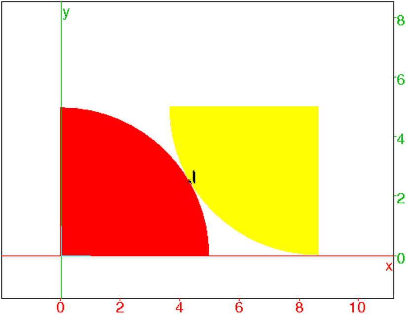
On veut emballer 40 biscuits d’epaisseur 0.5 cm et ayant la forme d’un quart
de cercle de rayon 5 cm dans une boite ayant la forme d’un
parallélépipède rectangle. Les biscuits sont dans 5 sachets fraicheur de
8 biscuits et ayant chacun 4 cm de haut.
On décide de mettre un sachet dans chaque coin de la boite et 1 sachet
au milieu, de façon qu’ils soient tangents aux 4 autres.
Quelle est la dimension de la boite de surface minimum ?
La réponse :
On ouvre un écran de géométrie (Alt+g).
Le premier biscuit sera cercle(point(0),5,0,pi/2,affichage=1+rempli).
On choisit un paramètre a et on positionne le deuxième biscuit dans
le coin D:=point(0,10+2*a)
Le cinquième biscuit (celui que l’on met au milieu de la boite) aura pour
centre I qui sera le point d’intersection de la tangente au biscuit 1
d’équation y=−x+5*√2 avec y=5+a.
Le troisième biscuit doit être tangents au cinquième biscuit, son
centre J est donc sur l’axe des x et sur le cercle de centre I et de
rayon 10. IL faut bien sûr imposer que abscisse(J)>=10
Il faut trouver a pour que la surface de la boite soient minimum.
On tape :
cercle(point(0),5,0,pi/2,affichage=1+rempli); supposons(a=[1.66,0,5,0.01]); cercle(point(0,10+2*a),5,3*pi/2,2*pi,affichage=2+rempli); I:=inter_unique(droite(y=5+a),droite(y=-x+5*sqrt(2))); cercle(I,5,-pi/4,pi/4,affichage=5+rempli); J:=inter(droite(y=0),cercle(I,10))[0]:; cercle(J,5,pi/2,pi,affichage=3+rempli); cercle(translation((10+2*a)*i,J),4,pi,3*pi/2,affichage=5+rempli); xj:=normal(abscisse(J)) evalf(xj*(10+2*a)*2+2*4*(xj+10+2*a)
et on fait bouger le curseur a.
On trouve que a varie entre 0 et 0.453289254261.
En effet :
xj:=normal(abscisse(J)) renvoie :
-a+5*sqrt(2)-5+sqrt(-a^2-10*a+75) et
evalf(solve(-a^2-10*a+75-(15+a-5*sqrt(2))^2=0,a))
renvoie [-13.3822214424,0.453289254261]
la surface de la boite est donc :
xj*(10+2*a)*2+8*(xj+10+2*a)
qui varie de 380.477011792 à 385.361761927 lorsque a varie
de 0 à 0.45
Donc on prend a=0 et alors xj vaut 5*sqrt(2)-5+5sqrt(3) ou
encore 10.7313218497
La boite est donc de dimensions 4*5*(5√2−5+5√3) et sa surface vaut
20*(5*sqrt(2)-5+5*sqrt(3))+8*(5*sqrt(2)-5+5*sqrt(3)+80) c’està dire :
28*(5*sqrt(2)-5+5*sqrt(3))+80 ou encore 380.477011792
On obtient :
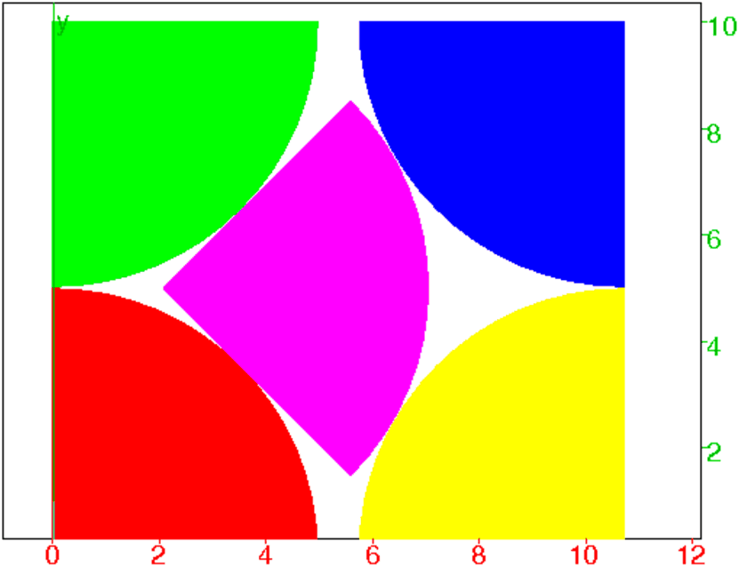
Une goutte d’eau representée ci-dessous est constituée par 2 demi-cercles
C2 et C3 de centre O2 et O3 et rayon r et d’un demi-cercle C1 de
centre O et de rayon 2r.
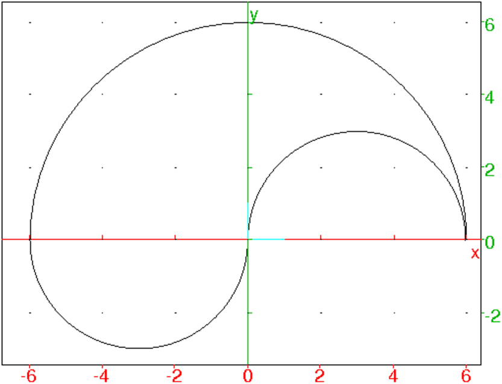
On cherche à placer 4 A,B,C,D points surle contour de cette goutte pour que
ABCD soit un carré.
Pour chercher, on fait la figure suivante et on tape dans un écran de
géométrie :
C1:=cercle(0,6,0,pi):;C1; C2:=cercle(3,3,0,pi):;C2; C3:=cercle(-3,3,pi,2*pi):;C3; a:=element(0 .. pi,1.947787474,0.031415927); A:=element(C1,a); c:=element(pi .. (2*pi),4.618141269,0.031415927) C:=element(C3,c); C4:=cercle(A,C,affichage=rouge); B:=inter(C4,C1)[0]; D:=inter(C4,C2)[1]; polygone(A,B,C,D); O:=point(0);
On fait bouger les curseurs a et c pour essayer d’avoir un
rectangle et on obtient :
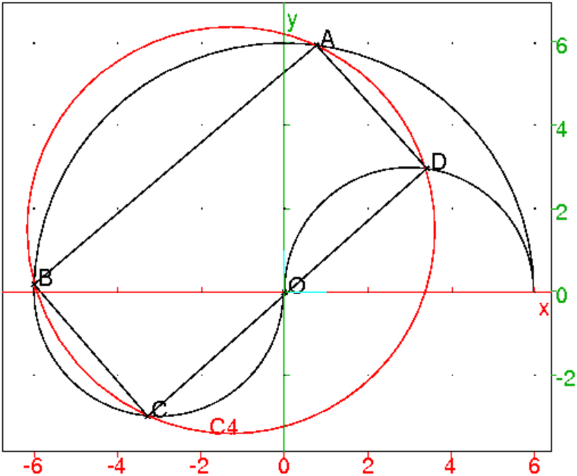
Il semble que le segment CD passe par O.
Les lemmes qui suivent vont montrer que si un rectangle direct ABCD a ses
sommets sur le pourtour de la goutte un de ses sommets est le point
d’intersection A de C1 et C3 et son côté CD passe par 0.
Lemme 1
Si 3 sommets d’un rectangle sont sur un demi-cercle Γ de centre O,
alors le quatrième sommet se trouve sur le demi-cercle γ symétrique
de Γ par rapport à O. Dans le cas de la goutte cela veut
dire que si un rectangle a ses sommets sur le pourtour de la goutte, il ne peut
pas y avoir 3 sommets sur le même demi cercle.
Lemme 2
Si 2 sommets M et P d’un rectangle sont sur un demi-cercle Γ de
centre O, alors ces sommets sont consécutifs car sinon le centre de
Γ serait le milieu de MP et le rectangle aura ses 4 sommets sur le
cercle de diamètre MP (cercle qui contient Γ). Dans le cas de la
goutte cela veut dire que si un rectangle a deux sommets sur un même
demi-cercle (faisant partie du pourtour de la goutte) alors ces 2 sommets sont
consécutifs.
Lemme 3
Soient c1, c2 et c3 les cercles complétant C1, C2 et C3
Montrons qu’il n’y a pas de rectangle ayant tous ses sommets sur C2∪ C3.
En effet, si par exemple A et B sont sur C3 et si C et D sont sur
C2 : l’angle A est droit donc le symétrique B1 de B par rapport à
O3 se trouve sur AD et sur c3 et l’angle B est droit donc le
symétrique A1 de A par rapport à O3 se trouve sur BC et sur c3 :
les deux droites AD et BC sont donc symétriques par rapport à O3.
De même l’angle C est droit donc le symétrique D1 de D par rapport
à O2 e trouve sur BC et sur c2 etc...Donc les deux droites AD et BC
sont donc symétriques par rapport à O2.
Donc AD et BC sont paralléles à O2O3 c’est à dire que AB et AC sont confondus et le rectangle se réduit à une droite.
Lemme 4
Supposons qu’il y ait 2 sommets A et B sur le demi-cercle C2. Les
côtés AD et BC sont symétriques par rapport à O2 et ces
côtés coupent C1 et C3 en des points qui sont de part et d’autre de
AB. Donc A et B ne sont pas consécutifs.
Lemme 5
Supposons qu’il y ait 2 sommets A et B sur le demi-cercle C3. Les
côtés AD et BC sont symétriques par rapport à O3.
Supposons que D soit sur C1 et que AD coupe c1 en
D1. L’angle D est droit donc DC passe par D2 symétrique de D1 par
rapport à O et donc D2 est sur C1.
BC coupe le cercle c3 en A3 symétrique de A par rapport à O3 et
coupe le cercle C2 en A2 et en C. L’angle C est droit donc DC passe
par A3 symétrique de A2 par rapport à O2 et donc A3 est sur c2.
Donc si DC passe par D2 situé sur C1, il ne peut pas couper c2 que si D2 et A3 sont confondus et sont sur la droitre OO2 c’est à dire si A
se trouve en P intersection de C1 et C3.
Même raisonnement si C est sur C1 et D sur C2.
Lemme 6
Il y a 2 sommets sur le demi-cercle C
Soient da et db les perpendiculaires à AB en A et B. Considérons
A1 et B1 les symétriques de A et B par rapport à O. Puisque AA1
et BB1 sont des diamètres du cercle de centre O et de rayon 2r, da
passe par B1 et db passe par A1. AB1 et A1B sont des segments
symétriques par rapport à O et les demi-cercles de rayon r sont aussi
symétriques par rapport à O. Donc AB1 et A1B coupent les demi-cercles de rayon r en deux points D et C symétriques par rapport à O.
Donc DC passe par O.
Si A et B sont sur le demi-cercle de centre O et de rayon 2r alors le segment CD passe par O si les angles A et B de ABCD sont droits, On tape :
C1:=cercle(0,6,0,pi):;C1; C2:=cercle(3,3,0,pi):;C2; C3:=cercle(-3,3,pi,2*pi):;C3; O:=point(0); a:=element(0 .. pi,1.947787474,0.031415927); A:=element(C1,a); b:=element(0 .. pi,2.82743343,0.031415927;) B:=element(C1,b); C5:=cercle(0,6,pi,2*pi):;affichage(C5,1); A1:=symetrie(O,A); B1:=symetrie(O,B); s1:=segment(A,B1):;s1; s2:=segment(A1,B):;s2; D:=inter(C2,s1)[1]; C:=inter(C3,s2)[1]; segment(A,B);
On obtient :
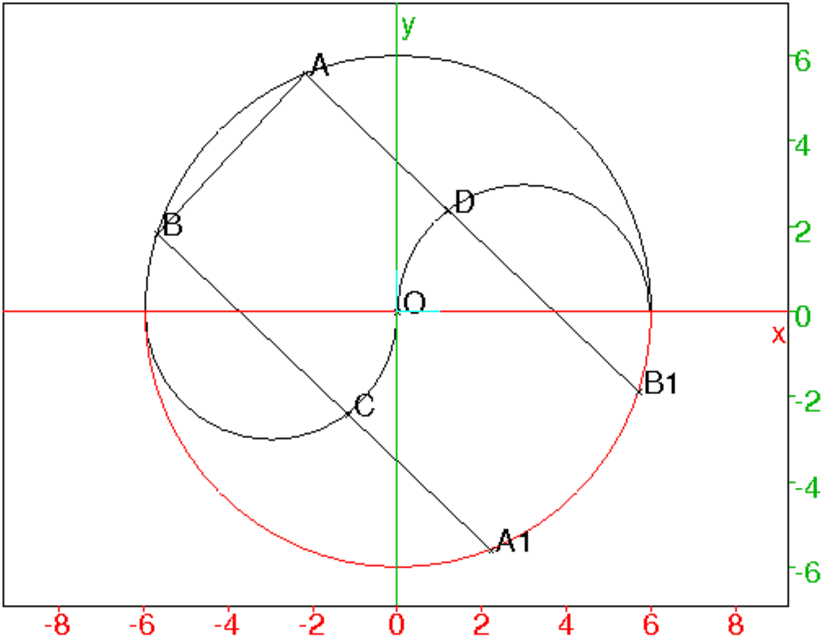
Pour avoir un carré il suffira de choisir OA=2r et OD=AD/2 donc
OD2+AD2=5*OD2=4*r2 c’est à dire :
OD=2r√5/5.
Dans la figure on a choisit r=3 donc OD=6/5*sqrt5 OD est donc
l’hypoténuse d’un triangle rectangle de côté 6/5 et 12/5.
Si le point D1:=point(12/5,6/5):;D1, on a OD=OD1.
On tape dans un écran de géométrie :
C1:=cercle(0,6,0,pi):;C1; C2:=cercle(3,3,0,pi):;C2; C3:=cercle(-3,3,pi,2*pi):;C3; O:=point(0); D1:=point(12/5,6/5):;D1; D:=inter(C2,cercle(O,longueur(O,D1)))[0]; C:=symetrie(O,D); carre(C,D,A,B);
On obtient :
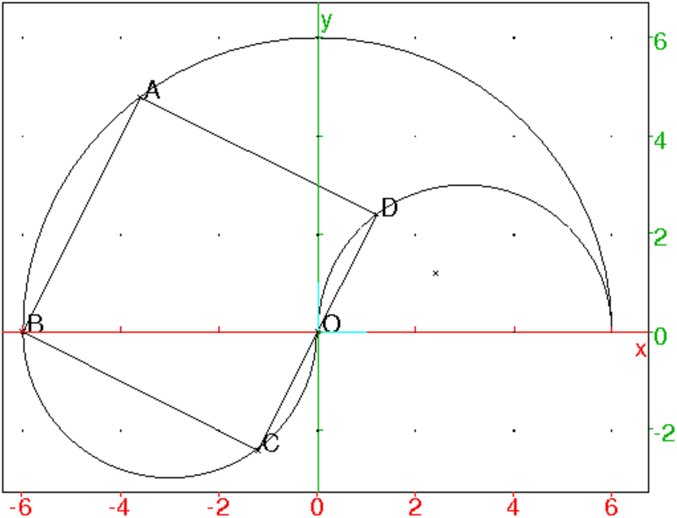
On remarque que :
le point B est sur l’axe des x car l’angle C est droit,
le point D a pour coordonnées 6/5,12/5.